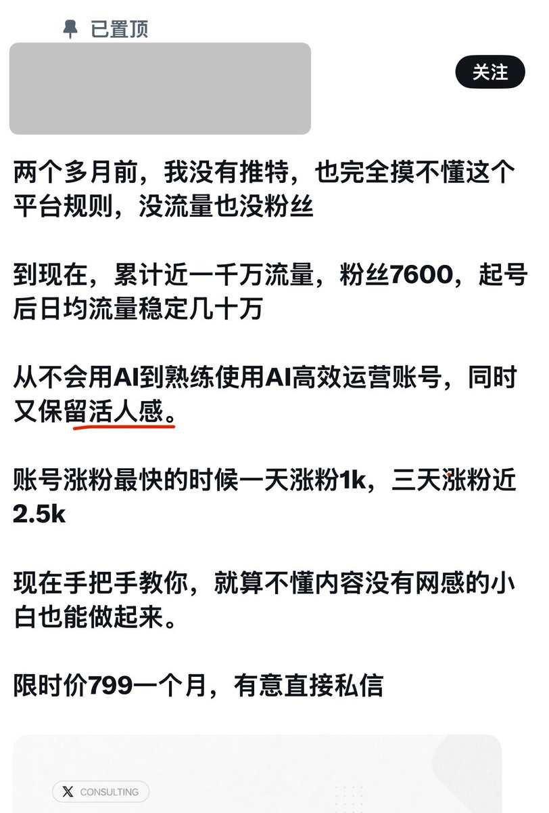

愿晚星照常升起🌈(keep4o)
@tadatsukiei
@CyberKanjousen 为什么我有“活人感”？
因为我是活人啊，因为我不用ai写长篇大论，不刻意聊严肃话题，不到处刷万达广场。
活人感需要什么“运营”啊，要刻意“制造”活人感，不就意味着你不是活人吗？

サイバー環状線
@CyberKanjousen
「活人感」是「保留」出来的吗？是「运营」「捏造」出来的吗？
環状線认为都不是。任何刻意营造出来的都不叫「活人感」。
「活人感」应当是用心运营账号时，水到渠成的副产品。
推文形式不重要。上到严肃话题的长篇大论，下到梗图配上几句评价，只要是用心撰写的推文，活人感便是水到渠成的事。 https://t.co/V1yIdLtAA4